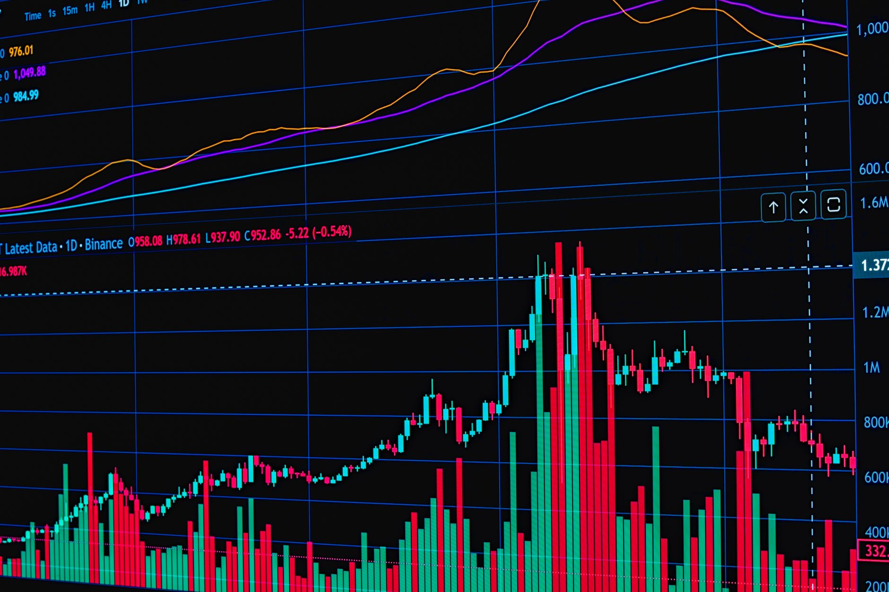

Are you wondering when silver prices will reach their all-time high again? It’s a question on the minds of many investors, and a valid one given the recent surge in precious metal values. At Fused Distribution, we stock a wide range of silver bullion and investment products, and we’ve seen firsthand the volatility and potential of this market. We’re here to break down the factors driving silver’s price, explore historical trends, and give you a realistic outlook on when you might see that historic peak revisited. Let's get started.

The Recent Silver Surge: What’s Driving the Demand?
The past year has witnessed a dramatic rise in silver prices, surpassing $30 per ounce in early 2024. This isn’t just a blip; it’s a continuation of a longer-term upward trend. Several key drivers are fueling this demand. Inflation remains a concern, and silver is traditionally viewed as an inflation hedge - a safe haven asset that tends to hold its value when the purchasing power of currency declines. The Federal Reserve’s monetary policy, including interest rate decisions, also plays a significant role. Lower interest rates generally make holding physical silver more attractive than investing in bonds. Also, geopolitical uncertainty, particularly the war in Ukraine and tensions in other regions, adds to the safe-haven appeal of precious metals. Finally, increased industrial demand, particularly in solar panel manufacturing, contributes to overall silver consumption. According to a report by the World Silver Survey 2023, industrial demand accounted for 57% of total silver mine production.
Understanding Historical Silver Price Peaks
Let’s look back at silver’s price history. The previous all-time high was reached in 2011, peaking at $50.15 per ounce. This occurred during the height of the eurozone debt crisis and a period of significant economic uncertainty. The price then steadily declined for several years before beginning its recent ascent. Analyzing past peaks and troughs provides valuable context for current market movements. The 2008 financial crisis also saw a significant spike in silver prices, though not as high as the 2011 peak. The cyclical nature of the silver market is well-documented, with periods of strong growth followed by corrections. Currently, we’re seeing a confluence of factors - inflation, geopolitical risk, and industrial demand - that are pushing prices higher.

Key Factors Influencing Future Silver Prices
Predicting the future is always challenging, but several key factors will likely continue to influence silver prices in the coming years.
- Inflation: Continued inflationary pressures will likely support silver’s role as an inflation hedge. The Consumer Price Index (CPI) rose 3.2% in April 2024, indicating persistent inflationary trends.
- Interest Rates: The Federal Reserve’s actions regarding interest rates will be crucial. If the Fed continues to hold rates low, it will further incentivize investors to hold physical silver.
- Industrial Demand: The growth of the solar industry is a significant driver of silver demand. According to the Silver Institute, solar panel manufacturing currently accounts for approximately 20% of global silver demand. Continued expansion in this sector will likely sustain demand.
- Geopolitical Risk: Ongoing global instability will continue to fuel demand for safe-haven assets like silver.
- Supply Constraints: Silver mining production is relatively limited, and new discoveries are rare. This inherent scarcity contributes to the potential for price appreciation.
The Role of Government Policies
Government policies can have a significant impact on silver prices. Changes to tax laws regarding precious metals investments, trade policies affecting silver imports and exports, and regulations related to mining operations can all influence the market. For example, a shift towards more supportive tax policies could encourage greater investment in silver.
Silver’s Industrial Applications: More Than Just Jewelry
While silver is often associated with jewelry, its industrial applications are increasingly important. As mentioned, it’s a critical component in solar panels, accounting for roughly 20% of global demand. It’s also used in electronics, batteries, medical devices, and catalysts. The growth of the electric vehicle market is driving increased demand for silver in battery production. Also, silver’s antimicrobial properties are being explored for use in healthcare applications. The increasing breadth of these industrial uses provides a strong foundation for long-term silver demand. For more on this, see Silver Vs Gold Performance Comparison 2025 2026.
Comparing Silver to Other Precious Metals: Gold vs. Silver
Comparing silver to other precious metals, particularly gold, is essential for understanding its investment potential. Gold has historically been considered a safer-haven asset, and its price tends to be more stable than silver’s. However, silver often exhibits greater price volatility. As of July 26, 2024, the gold price was approximately $3,887 per ounce, while the silver price was around $30.25 per ounce. This represents a significant difference in price, reflecting silver’s higher volatility. Gold’s price has increased by roughly 14% over the past year, while silver has seen an increase of approximately 65%. While gold offers stability, silver offers the potential for greater returns, albeit with increased risk.
Timing the Market: When to Buy and Hold
Trying to perfectly time the market is notoriously difficult. However, considering a strategic approach to buying silver can be beneficial. Many investors prefer a “buy and hold” strategy, gradually accumulating silver over time. This approach takes advantage of market volatility and reduces the risk of buying at a peak. A common strategy is to dollar-cost average - investing a fixed amount of money in silver at regular intervals, regardless of the price. This helps to smooth out the impact of market fluctuations. We recommend starting with a small investment and gradually increasing your holdings as you become more comfortable with the market.
Potential Resistance Levels: Where Could Silver Stop?
Predicting exact price levels is impossible, but identifying potential resistance levels can help investors understand where silver might encounter difficulty in continuing its upward trend. One potential resistance level is around $50 per ounce, which represents the previous all-time high. Another potential resistance level could be established around $60 per ounce, based on historical price patterns and current market momentum. Breaking through these resistance levels would signal a significant shift in market sentiment and could trigger further price increases. However, it's important to remember that these are just potential levels, and the market can be unpredictable.
Fused Distribution: Your Source for Silver Investment
At Fused Distribution, we understand the importance of providing our customers with high-quality silver investment options. We stock a diverse range of silver bullion coins, bars, and rounds from reputable mints around the world. We also offer a selection of silver ETFs and other investment vehicles. Our knowledgeable team is here to answer your questions and help you make informed decisions about your silver investments. You can browse our inventory online at {Insert Website Link Here} or visit our store at {Insert Store Address Here}. We recommend starting with a small investment and building your portfolio gradually.
Looking Ahead: A Realistic Outlook for Silver Prices
While predicting the exact timing of the next all-time high is impossible, the current confluence of factors - inflation, geopolitical risk, and industrial demand - suggests that silver prices have significant upside potential. We believe that silver is well-positioned to continue appreciating in value over the long term. However, it’s important to approach silver investing with a long-term perspective and a willingness to weather market volatility. Don’t chase short-term gains; focus on building a diversified portfolio that aligns with your investment goals. We anticipate continued upward movement, potentially reaching $50-$60 per ounce within the next 12-24 months, but recognize that unforeseen events could alter this trajectory. Let’s continue to monitor the market and provide you with the latest insights on silver investment opportunities.
Related
- Comex Silver Inventory: What Declining Stockpiles Mean For Price
- Silver Vs Gold Performance Comparison 2025 2026
- Silver Price Prediction 2026: What Analysts Expect
Read next: Comex Silver Inventory: What Declining Stockpiles Mean For Price